A look at how climate change could reshape life in North Macedonia over the next 25 years — agriculture, water, health, and people's finances. The temperature figures are scientists' projections based on current emissions trajectories, compared to the 1961–1990 average.
Skopje could see temperatures of 40–42°C lasting for days at a stretch — something that is rare today but would become a normal summer. Working outdoors becomes a health risk, hospitals fill up, and people increasingly stay indoors.
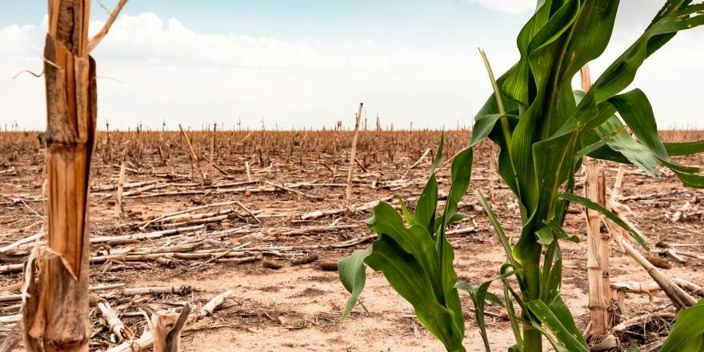
Spring droughts are expected to arrive earlier and hit harder, putting tobacco, grapes, and wheat in Pelagonija at serious risk. If these conditions persist, farmers could face multiple bad years in a row with no support or safety net.
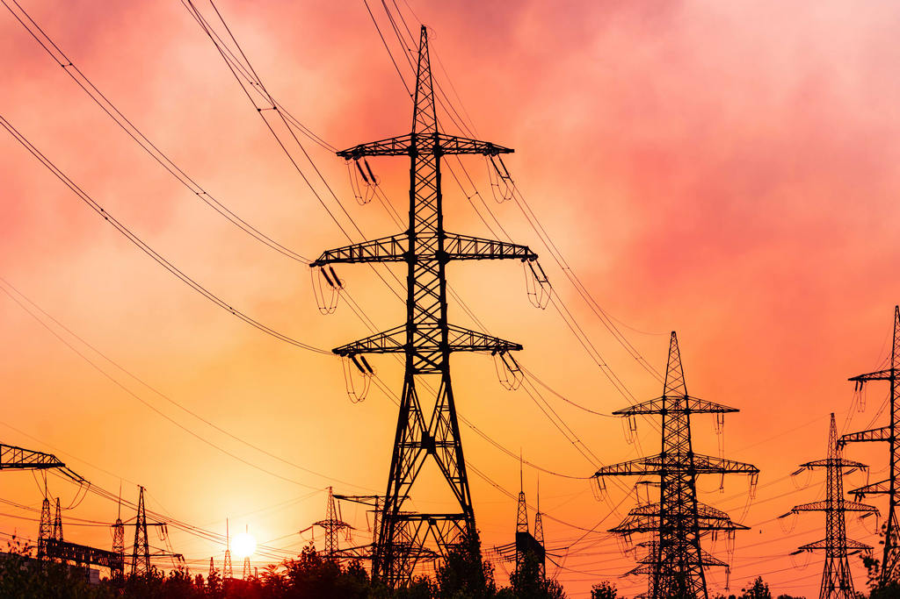
When rivers run low from drought, hydropower plants produce less electricity — just when everyone is running air conditioning. If rainfall keeps declining, summer power cuts could become entirely routine.
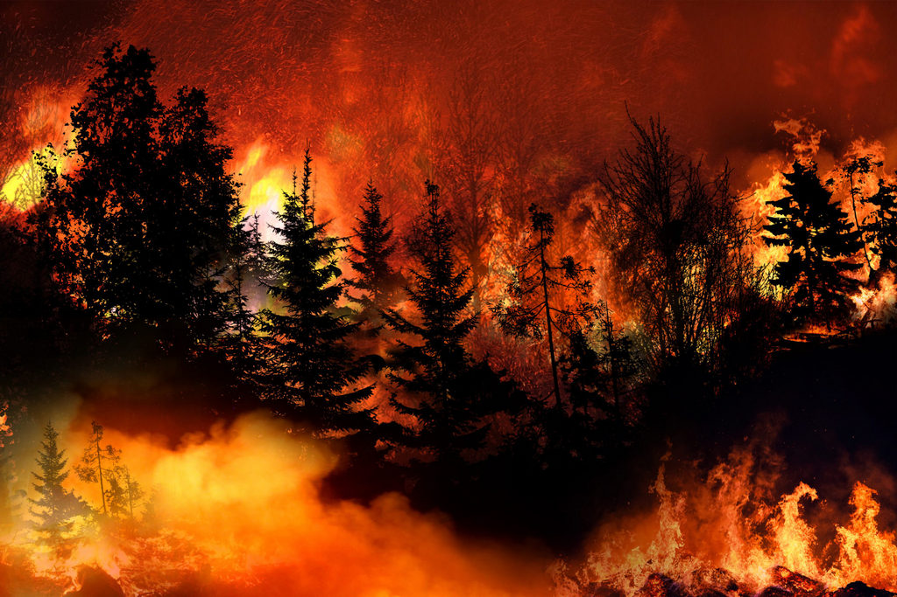
Long droughts dry out the western mountain forests to the point where they ignite easily. Fires spread faster than firefighters can respond, burning thousands of hectares and forcing people to evacuate their homes.
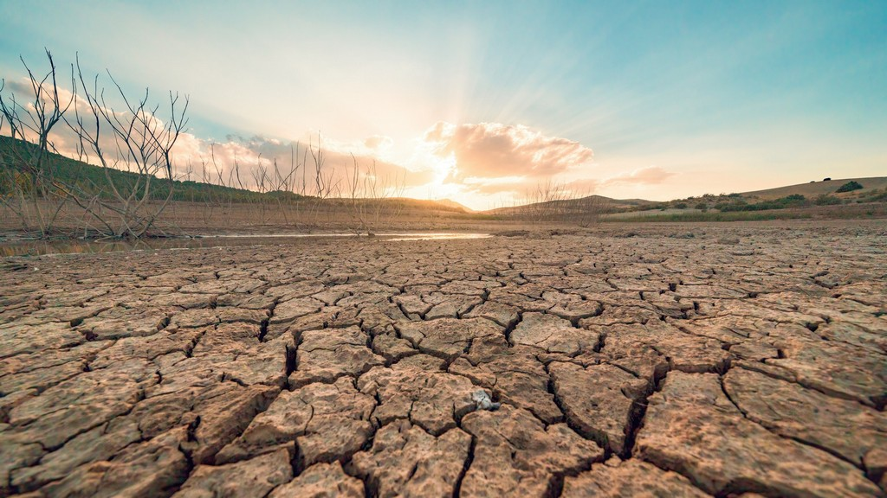
Lake Prespa is already showing signs of decline — less rain and stronger evaporation mean less water. Lake Ohrid is more stable, but its water is warming too — and that directly harms the rare fish and wildlife that live nowhere else on Earth.
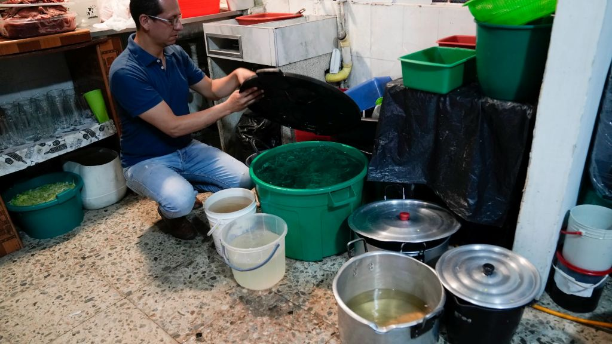
Groundwater replenishes through rain and snow — when there isn't enough of either, reserves slowly drop. Science shows that areas relying on wells would be among the first where authorities have to restrict how much water people can use.
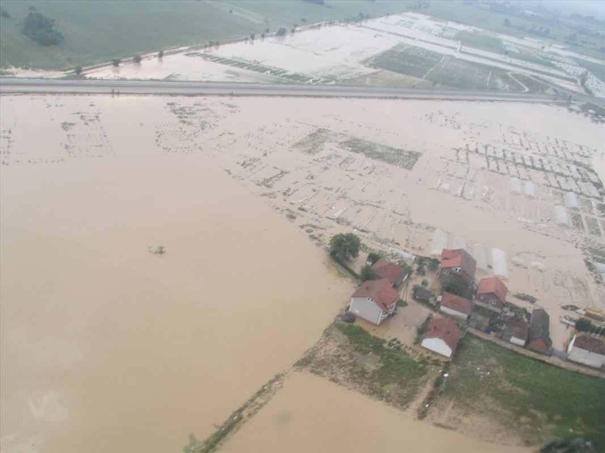
Soil that hasn't received rain for a long time hardens and can no longer absorb water — like a dry sponge that repels liquid. When heavy rain does arrive, water runs down streets, overwhelms the drainage system, and causes major damage to low-lying areas of Skopje and Tetovo.
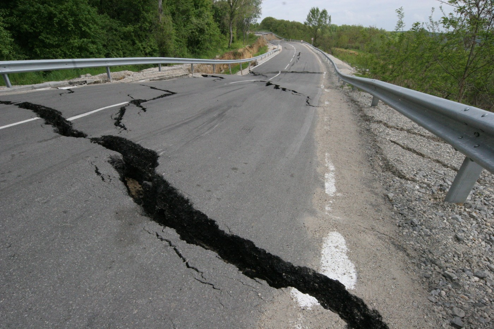
Roads, bridges, and drainage systems were built for the old climate — not this one. Each new flood brings new damage, and municipal budgets can't keep up. Some rural roads could stay broken for months at a time.
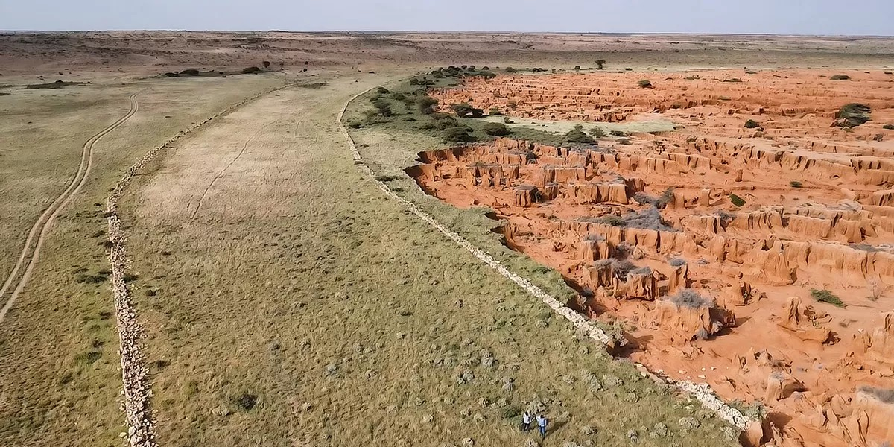
Heavy downpours wash away the topsoil — the fertile layer without which nothing can grow. It happens slowly and quietly, but the damage is permanent: once lost, that soil does not come back easily.
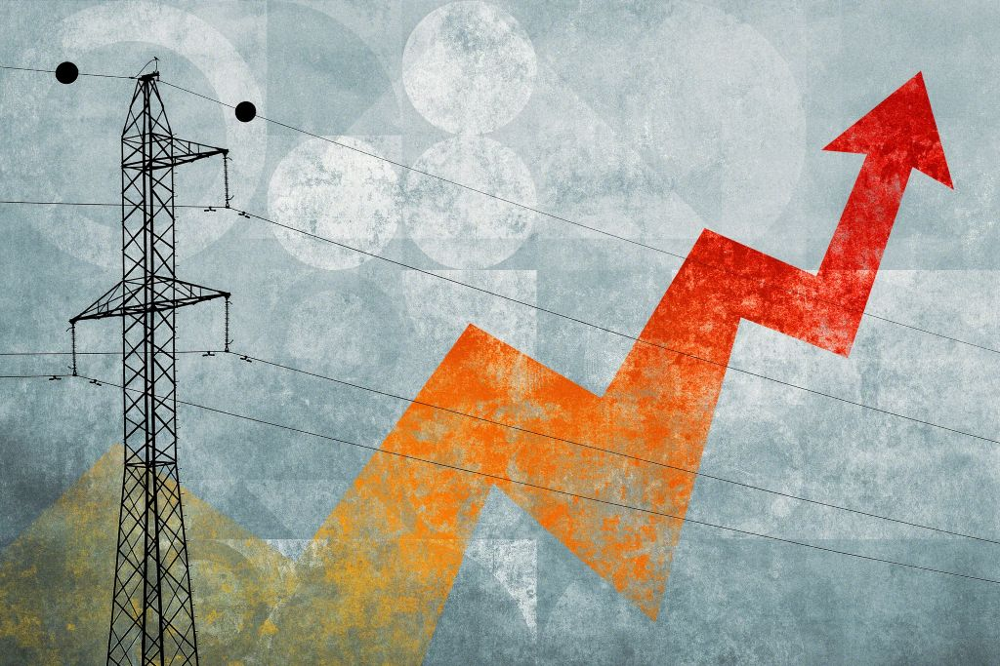
When rivers permanently produce less power, the country must buy more electricity from abroad. Energy bills rise steadily — and households on lower incomes feel this most sharply.
Every summer more people end up in hospital with heart and lung problems caused by extreme heat. On top of that, wildfire smoke damages lungs, and ticks and mosquitoes — which carry disease — begin spreading to areas where they were previously unknown.
When domestic farming produces less, the country must import more food — and imported food costs more. Rising prices hit hardest for families on low wages and pensions, who already spend a large share of their income on food.
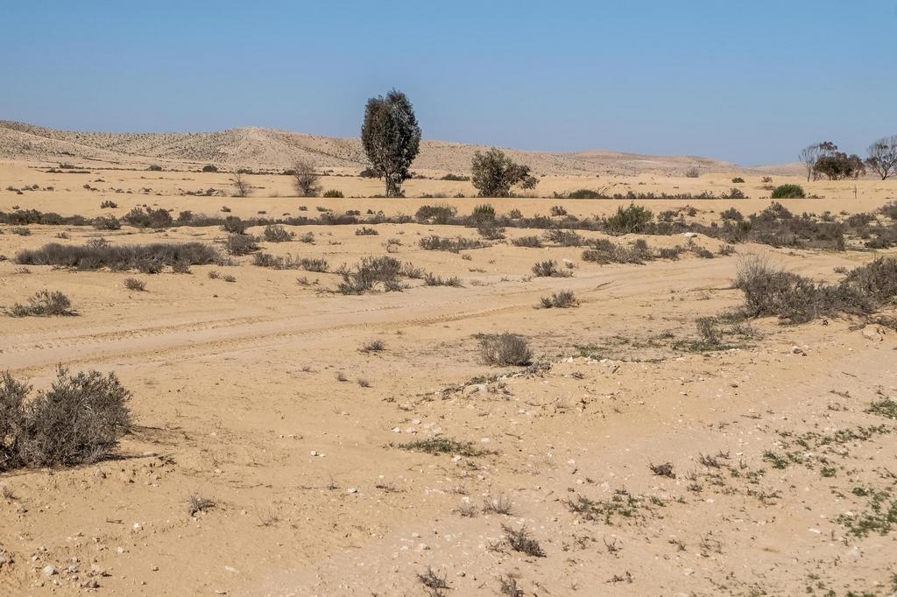
Central and southern North Macedonia could take on a climate similar to today's southern Spain or Greece — long dry summers, little rain, scorched grass. Land that once supported varied crops would increasingly look parched and bare.
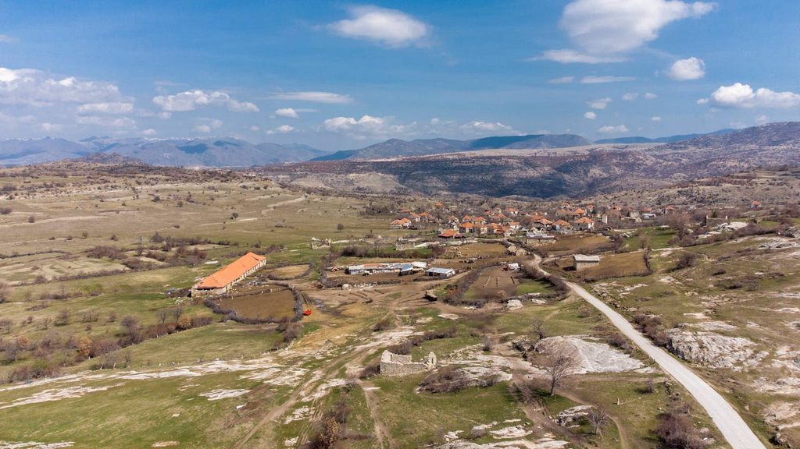
When the land stops yielding, there is no reason to stay in the village. Working-age people leave for the cities — and behind them they leave empty houses in places that have been continuously inhabited for centuries.
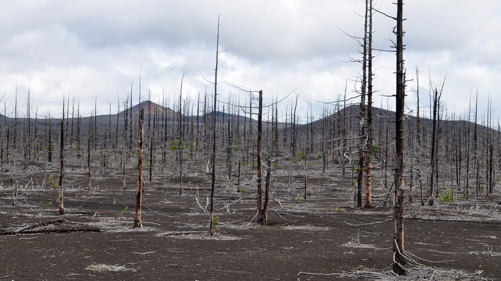
Beech and oak trees — our most widespread forest species — begin to deteriorate. Drought weakens them, warming helps pests and disease spread, and the trees cannot cope. Where they are gone, new trees grow back slowly — if at all.